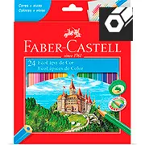

<div class="telaFundo">
  <div class="container page">
    <h1>Faça seu pedido!</h1>
    <ul class="listaMateriais">
      <li class="material">
        
        <h5>Lapis de Cor</h5>
        <ul>
          <li>Lápis de Cor Redondo EcoLápis SuperSoft 50 Cores Faber-Castellgap.</li>
          <li>Preço R$ 20,00<li>
        </ul>  

      </li>

      <li class="material">
        
        <h5>Lapis de Cor</h5>
        <ul>
          <li>Lápis de Cor Redondo EcoLápis SuperSoft 50 Cores Faber-Castellgap.</li>
          <li>Preço R$ 20,00<li>
        </ul>  

      </li>

      <li class="material">
        
        <h5>Lapis de Cor</h5>
        <ul>
          <li>Lápis de Cor Redondo EcoLápis SuperSoft 50 Cores Faber-Castellgap.</li>
          <li>Preço R$ 20,00<li>
        </ul>  

      </li>
    
    </ul>


  </div>
</div>


<!-- <mat-card class="example-card">
            <mat-card-header>
              <div mat-card-avatar class="example-header-image"></div>
              <mat-card-title>Shiba Inu</mat-card-title>
              <mat-card-subtitle>Dog Breed</mat-card-subtitle>
            </mat-card-header>
            
            <mat-card-content>
              <p>
                The Shiba Inu is the smallest of the six original and distinct spitz breeds of dog from Japan.
                A small, agile dog that copes very well with mountainous terrain, the Shiba Inu was originally
                bred for hunting.
              </p>
            </mat-card-content>
            <mat-card-actions>
              <button mat-button>LIKE</button>
              <button mat-button>SHARE</button>
            </mat-card-actions>
          </mat-card> -->